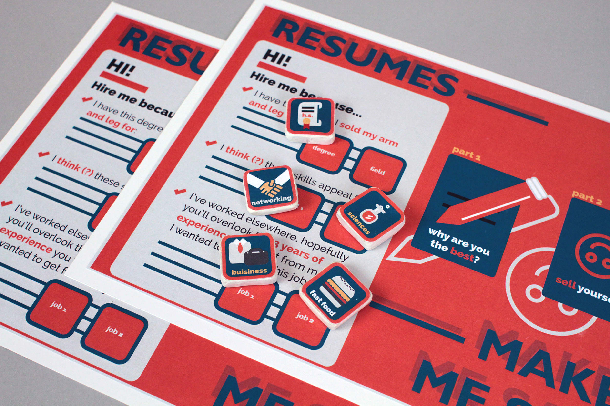
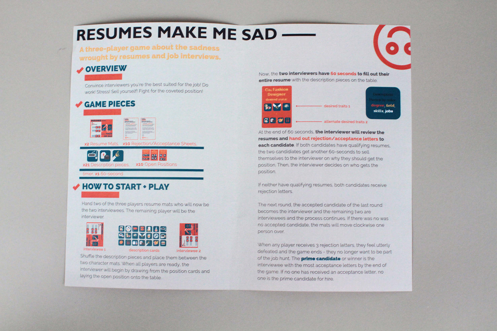
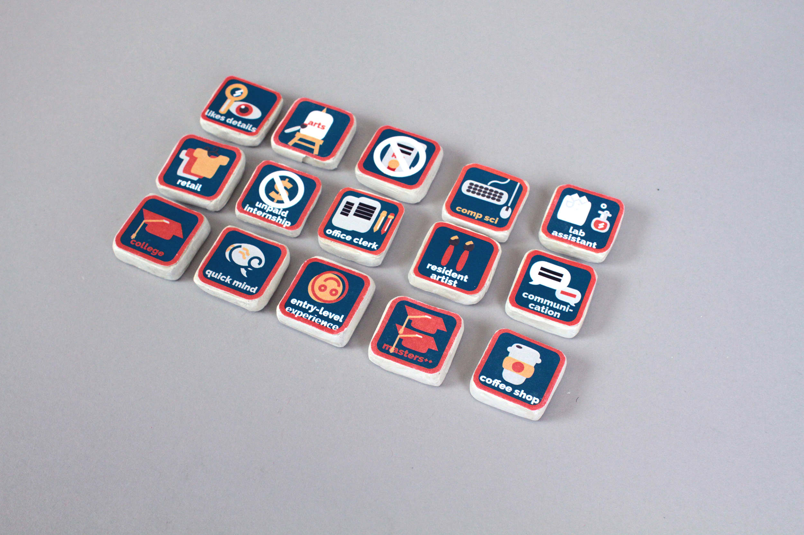
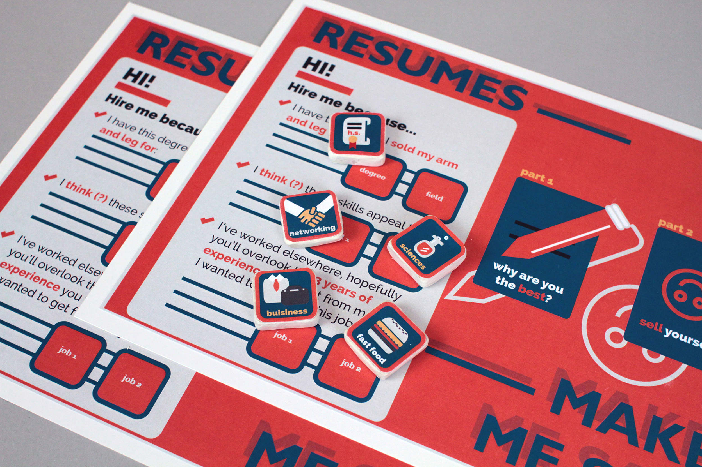
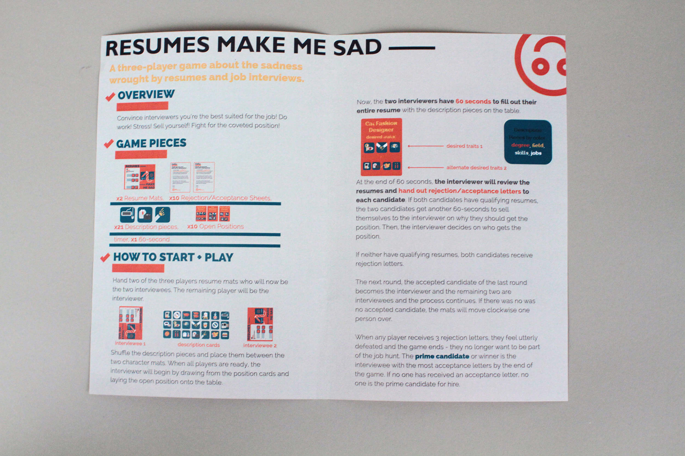
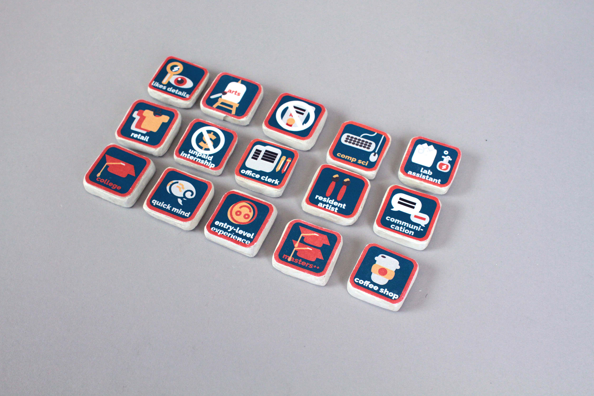
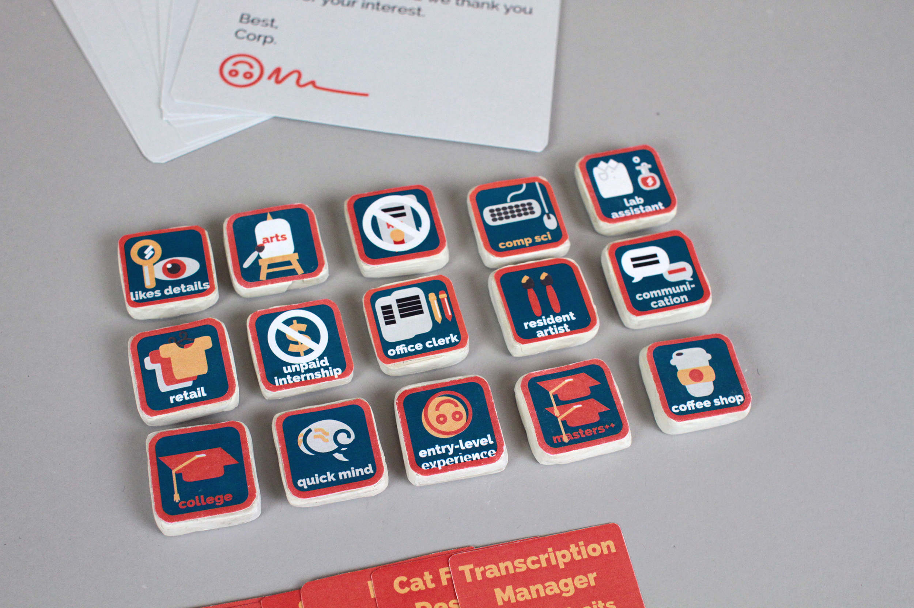
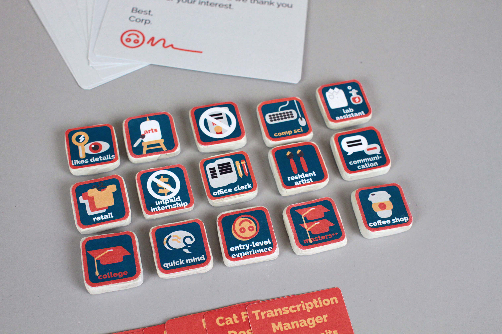
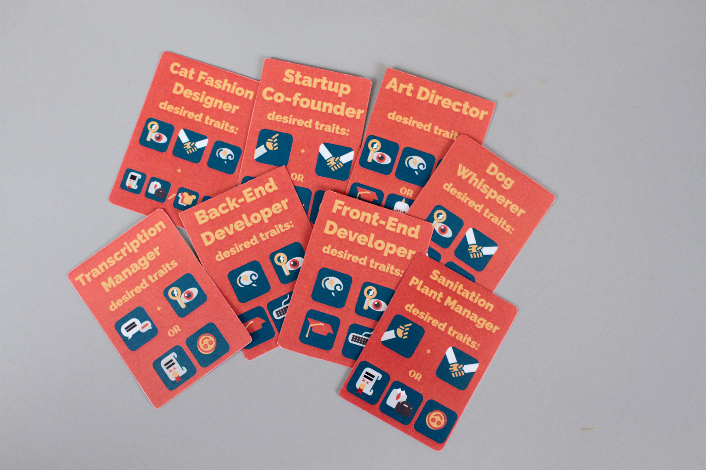
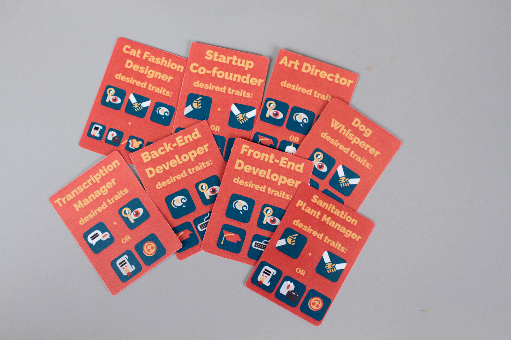

board games, graphic, 2016
Resumes Make Me Sad is three-player game capturing the woes of job hunting and the rat race. Two players face off in the anxiety-filled task of finding work under Corp. Corp. and impressing their hiring manager, the third player. The hiring manager determines the winner of each round by considering which skills and experience each player lays down on the table, their pitches, and her own discretion.
Spruce up those old resumes and prepare to sell yourself!
 





 

 
